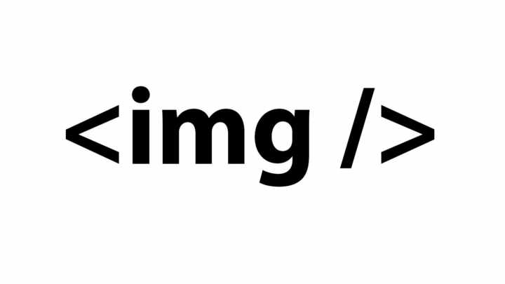
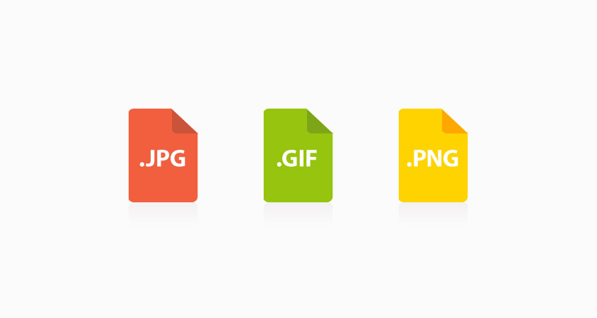

Las imágenes de contenido son las que proporcionan información y complementan la
información textual. Las imágenes de adorno son las que se utilizan para hacer bordes
redondeados, para mostrar pequeños iconos en
las listas de elementos, para mostrar fondos de
página, etc. Las imágenes de contenido se incluyen
directamente en el código HTML mediante la
etiqueta <img> y las imágenes de adorno no se
deberían incluir en el código HTML, sino que
deberían emplearse hojas de estilos CSS para
mostrarlas.

Los dos atributos requeridos son src y alt. El atributo src es similar al atributo href de los
enlaces, ya que establece la URL de la imagen que se va a mostrar en la página. Las URL
indicadas pueden ser absolutas o relativas. El atributo alt permite describir el contenido
de la imagen mediante un texto breve.
Las descripciones deben tener una
longitud inferior a 1024 caracteres y
son útiles para las personas y
dispositivos discapacitados que no
pueden acceder a las imágenes.
Ejemplo sencillo para incluir una imagen:
<img src="logotipo.gif" alt="Logotipo de Mi Sitio" />
HTML no impone ninguna restricción sobre el formato gráfico que se puede utilizar en
las imágenes, por lo que en principio la etiqueta <img/> puede incluir cualquier formato
gráfico existente. Sin embargo, si la imagen utiliza un formato poco habitual, todos o
algunos navegadores no serán capaces de mostrar esa imagen.
La recomendación es utilizar uno de los tres
siguientes formatos gráficos que entienden todos
los navegadores modernos: GIF, JPG y PNG. El
formato PNG presenta el inconveniente de que los
navegadores obsoletos como Internet Explorer 6 no
muestran correctamente las imágenes con
transparencias de 24 bits.

El atributo longdesc no se utiliza de forma habitual, pero permite indicar la URL en la
que se puede encontrar más información sobre la imagen. Como el atributo alt sólo
permite incluir descripciones de hasta 1024 caracteres, el atributo longdesc se emplea
con las imágenes complejas que necesitan mucha información para ser descritas:
Los atributos width y height se utilizan para indicar la anchura y altura con la que se
muestran las imágenes, por lo que son los
más contradictorios. Como ya se ha
comentado, HTML estructura de forma
correcta los contenidos de la página y CSS
define el aspecto gráfico con el que se
muestran los contenidos. En principio, la
anchura y la altura con la que se muestra
una imagen es parte de su aspecto gráfico,
por lo que debería ser propio de CSS y no
de XHTML.

Sin embargo, en la práctica no es viable establecer la anchura y altura de todas las
imágenes de contenidos mediante CSS. Si el sitio web dispone de muchas imágenes, la
sobrecarga de estilos diferentes que debería definir CSS sería contraproducente. Por
este motivo, los atributos width y height son la excepción a la norma de que el código
HTML no haga referencia al aspecto de los contenidos.